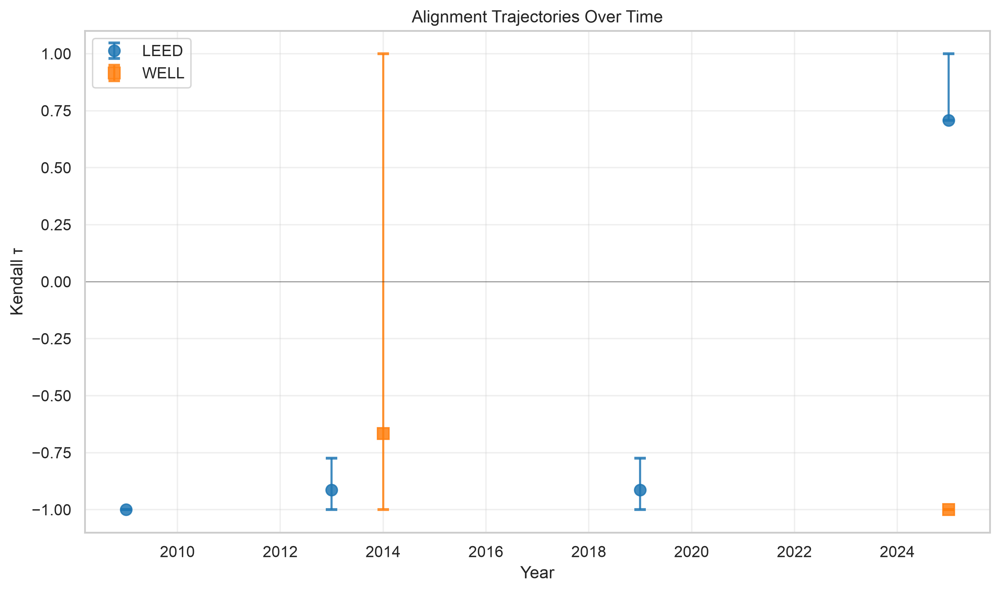
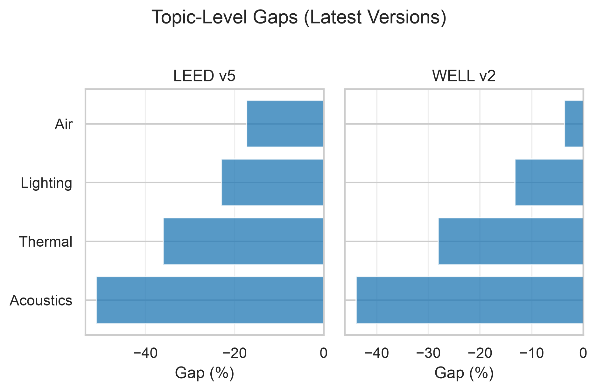
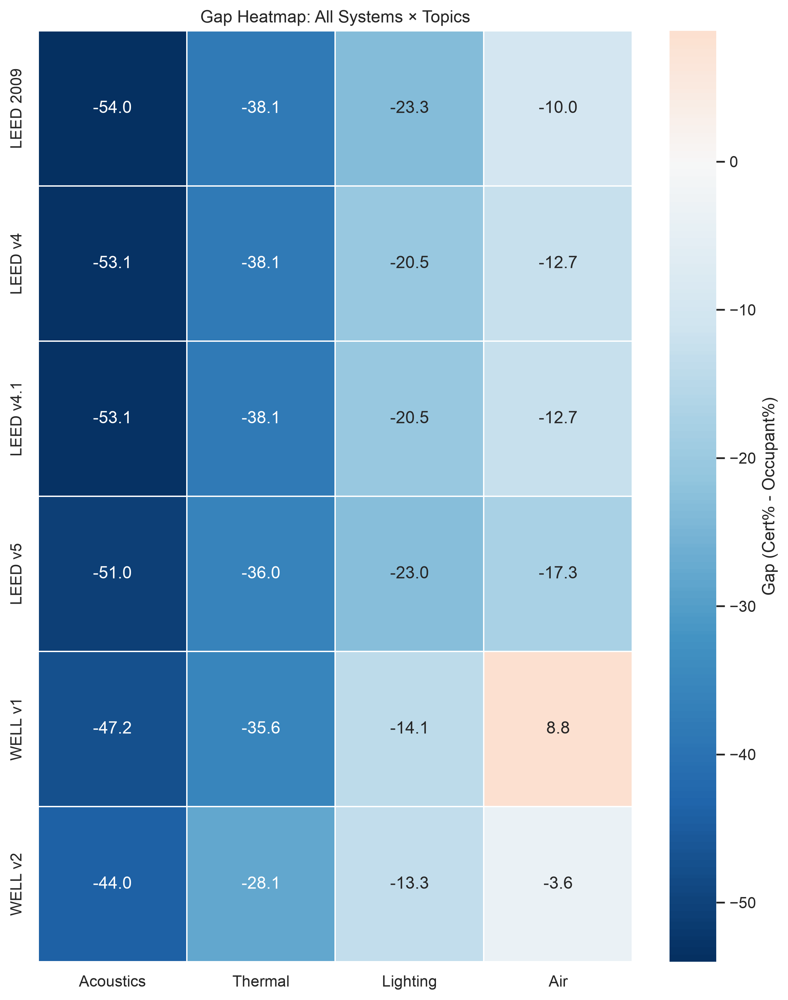
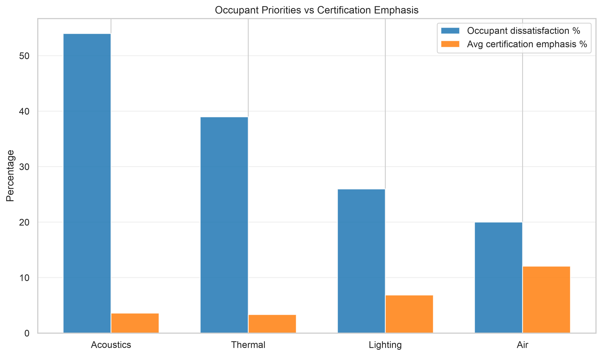

the quiet failure of certification points
Green building certifications claim to optimize for occupant well-being. This research asks whether certification point allocations actually match occupant-identified indoor environmental quality priorities across LEED and WELL (current dataset).
A certified building can look clean on paper while sound privacy and thermal comfort remain the things occupants feel every day.
Methodology
Research question
Do building certification systems allocate credits proportionally to occupant-identified needs?
Hypothesis: Certification systems show systematic misalignment — negative correlation between point allocations and occupant complaint patterns.
Key metric
Kendall tau-b (τ): rank correlation between certification priorities and occupant priorities.
- τ = +1: perfect alignment
- τ = 0: no relationship
- τ = −1: perfect misalignment
Technical details (bootstrap CI, gap analysis, sensitivity)
For each certification version, topics are ranked by points allocated and compared against occupant dissatisfaction rankings from 94,154 survey responses across 663 office buildings.
- Bootstrap CI: 1,000 resamples quantify uncertainty in τ estimates (95% percentile intervals).
- Gap analysis: Gap(topic) = Certification%(topic) − Occupant%(topic). Negative gaps indicate under-allocation.
- Sensitivity: Spearman ρ confirms findings are robust across correlation metrics (r = 0.975 agreement).
- Trend testing: Linear regression of τ vs. year tests whether systems improve over time.
Start with noise
Key findings
1. Systematic misalignment
Five of six analyzed versions show negative Kendall τ. Systems often allocate points in nearly the opposite order of occupant priorities.
2. LEED strongest case
LEED 2009 through v4.1 range from τ = −0.91 to −1.0. Acoustics receives under 1% of points while occupants report 54% dissatisfaction. LEED v5 bundles IEQ topics, producing a different allocation pattern.
3. WELL shifts over time
WELL v1 (τ = −0.67) and WELL v2 (τ = −1.0) both underweight acoustics relative to occupant complaints (10.0% vs 54%). Air quality receives the largest WELL v2 share (16.4%).
4. Dataset scope
Current analysis covers LEED (2009, v4, v4.1, v5) and WELL (v1, v2) from the updated certification_points source file. BREEAM and Fitwel can be added as additional rows are extracted.
5. Acoustics universally under-weighted
No version allocates proportionally to acoustic complaints. Gap ranking: Acoustics (−50.4%), Thermal (−35.7%), Lighting (−19.1%), Air (−7.9%).
Topic-level gaps
- Acoustics: 54% occupant vs 3.6% cert avg
- Thermal: 39% vs 3.3%
- Lighting: 26% vs 6.9%
- Air: 20% vs 12.1%
| System | Version | Year | τ | CI Lower | CI Upper | Acoustics gap | Thermal gap |
|---|
Publication figures




Interactive CAI calculator
Certification inputs
Load a known system/version, then edit points to test a redesign scenario.
Occupant benchmark
Limitations
Scope constraints
- Single occupant source: CBE / Graham et al. 2021 — findings may not generalize to all populations.
- Four IEQ topics: Acoustics, Thermal, Lighting, Air — privacy, control, aesthetics excluded.
- Certification systems in dataset: LEED and WELL (6 versions); BREEAM and Fitwel not yet in the updated source file.
Interpretation caveats
- Correlation, not causation: misalignment does not prove certifications cause dissatisfaction.
- Ordinal analysis: Kendall τ uses rankings, not absolute magnitudes.
- Small n: 4 topics limits statistical power; bootstrap CIs are wide.
Future validation
Published evidence
Test whether CAI ordering agrees with reported satisfaction patterns from LEED/WELL comparison studies.
De-identified data
Request building-level aggregates from CBE / POE researchers for correlation testing.
Campus pilot
Survey occupants in accessible certified buildings on acoustics, thermal, lighting, air, and overall satisfaction.
Correlation test
If higher CAI predicts higher satisfaction, the index becomes a validated instrument.
About the researcher
References
Academic sources
- Graham, R., et al. (2021). "A data-driven analysis of occupant satisfaction and indoor environmental quality." Building and Environment, 198, 107878. DOI
- UC Berkeley Center for the Built Environment. Occupant Survey Research
- Kent, M.G., et al. (2024). WELL/LEED occupant satisfaction comparison. Scientific Reports